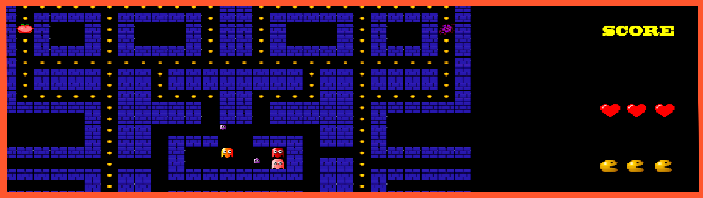

Pacman

This videogame was programmed on C++ using SDL.
It's just a recreation of the famous Pacman with some modifications on it.
How to install?
As many of the other games, if you really want to try one of this games or see the code, feel free to contact with me by any social media below.